Architecture
Vue d'ensemble#


| Couche | Technologies | Dossier |
|---|---|---|
| API | Django 5.2, Django REST Framework, SimpleJWT, django-filter, drf-spectacular | back-istc/ |
| Interface | Next.js 16 (App Router), React 19, MUI 5, axios, react-hook-form + yup, recharts, jsPDF, xlsx | frontend/ |
| Base | PostgreSQL (prod), SQLite (dev/tests) | — |
| Docs | MkDocs Material | docs/, mkdocs.yml |
Cycle d'une requête API#
- Le frontend appelle
apiRequest()(frontend/src/services/api/client.js). L'intercepteur ajoute :Authorization: Bearer <access>(jeton stocké danslocalStorage.token) ;X-Academic-Year: <id>(année choisie dans le sélecteur,localStorage.selectedAcademicYearId).
- Côté Django, les middlewares s'exécutent dans cet ordre (voir
MIDDLEWAREdanssmart_back/settings.py) :CorsMiddleware;- … middlewares Django standards …
academique.middleware.ArchiveAcademicYearMiddleware: refuse (403) l'accès à une année non active aux non-superusers ;users.middleware.PortalAccessMiddleware: pour les comptesetudiant/formateur, n'autorise que les routes listées dansPORTAL_RULES;academique.middleware.AcademicYearMiddleware: stocke l'année demandée dans unContextVar, lisible partout viaget_current_academic_year_id().
- La vue DRF applique
IsAuthenticated(par défaut) puis ses propres contrôles de rôle (users.permissions). - En cas de 401, l'intercepteur tente un rafraîchissement (
/api/auth/token/refresh/) puis rejoue la requête ; en cas d'échec,clearSession()et retour à/login.
L'année académique, colonne vertébrale des données#
AnneeAcademique(academique) : une seuleest_active=True(garanti danssave()).- Créer une année recopie les
Classede l'année source (signalacademique/signals.py). - Les données annuelles (inscriptions, notes, emplois du temps, paiements) sont filtrées par l'année de l'en-tête
X-Academic-Year, ou par l'année active à défaut. - Créer une
Specialite/ unCycle/ unNiveaugénère automatiquement les classes correspondantes pour chaque année (signaux).
Calculs métier centralisés#
| Sujet | Fonction / lieu | Remarque |
|---|---|---|
| Situation financière d'un étudiant | paiements/finance.py::situation_financiere(etudiant, year_id) |
Unique source pour le suivi, le portail et le tableau de bord. Les frais dont le libellé contient « inscription » sont des frais d'inscription. |
| Note finale | notes/models.py::Note.save() |
CC + SN (ou rattrapage), sur 100 ; bornes = ParametresGlobaux. |
| Heures vacataires | vacations/models.py (arrondir_quart_heure, RecapMensuel.recalculer) et vacations/services.py |
Heures arrondies au ¼ h ; seul un récap valide est payé. |
| Paie | paie/views.py (generer, valider, payer) |
payer crée les Depense, rembourse les avances, passe les récaps à paye. |
| Congés | conges/models.py::Conge.save() |
Débit / crédit du solde transactionnel, jours ouvrés. |
| Créneaux | emploidutemps/models.py::EmploiDuTemps.clean() |
Seule source des règles (pause, journée, conflits) ; le serializer l'appelle. |
Règle d'or
Une règle métier vit à un seul endroit (modèle ou service) et les vues / serializers l'appellent. Ne la recopiez pas dans le frontend autrement que comme aide à la saisie.
Frontend#
- Routage (
src/app) en trois groupes :(dashboard)pour l'administration ;(formateur-portal)pour le portail formateur ;(portal)pour le portail étudiant ;- plus les pages publiques
loginetpreinscription.
- Garde :
src/middleware.jsredirige les routes protégées sans session ;components/layout/PortalGuard.jsenvoie chaque type de compte vers son espace.
- Menus :
src/config/routes.js; le filtrage par droits se fait danscomponents/layout/Sidebar.js(viautils/permissions.js). - Appels API : uniquement via
src/services/api/services.js(objetsxxxService) etendpoints.js. Pas d'URL en dur dans les pages. - État global :
context/AcademicYearContext.js(année sélectionnée),context/SidebarContext.js.